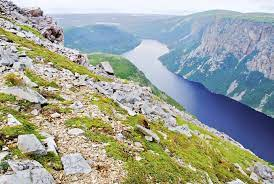
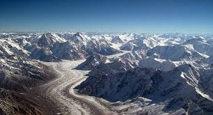

GIFTS OF NATURE
TYPES OF GIFTS OF NATURE
The Long Range Of Mountains
The Wide Oceans
The Sparkling Streams
The Dense Forests
The Animals
Birds And Insects
Some of the most common gifts of nature include:
Minerals: These include gold, silver, copper, iron, and many others. They are used in the manufacturing of
electronics, jewelry, and construction materials.
Oil and Natural Gas: These resources are used as a source of energy for heating, transportation, and electricity
generation.
Forests: Forests provide timber for construction and paper products, as well as habitat for wildlife.
THE LONG RANGE OF MAOUNTAINS

The world's longest above-water mountain range is the Andes,[1][2] about 7,000 km (4,300 mi) long. The range
stretches from north to south through seven countries in South America, along the west coast of the continent:
Venezuela, Colombia, Ecuador, Peru, Bolivia, Chile, and Argentina. Aconcagua is the highest peak, at about 6,962
m (22,841 ft).
This list does not include submarine mountain ranges. If submarine mountains are included, the longest is the
global mid-ocean ridge system which extends for about 65,000 km (40,000 mi).[3]


TABLE
RANK |
RANGE |
CONTINENT |
COUNTRY |
COORDINATES |
APPROX.
LENGTH |
APPROX.
WIDTH |
MAX
ELEVATION |
HIGHEST
POINT |
| 1 |
Andes |
South America |
Argentina
Bolivia
Chile
Colombia
Ecuador
Peru
Venezuela |
32°S 70°W |
7,000 km
(4,300 mi) |
500 km
(310 mi) |
500 km
(310 mi) |
Mount
Aconcagua |
| 2 |
Southern Great
Escarpment |
Africa[4][5][6] |
Zimbabwe
South Africa
Swaziland
Lesotho
Namibia
Angola |
29°S 29°E |
5,000 km
(3,100 mi) |
300 km
(200 mi) |
3,482 m
(11,424 ft) |
Thabana
Ntlenyana |
| 3 |
Rocky Mountains |
North America[7][8][9] |
Canada
United States |
39°N 106°W |
4,800 km
(3,000 mi) |
300 km
(200 mi) |
4,401 m
(14,439 ft) |
Mount Elbert |
| 4 |
Transantarctic
Mountains |
Antarctica[10][11][12] |
Antarctica |
84°S 166°EGreat Dividing Range |
3,500 km
(2,200 mi) |
400 km
(250 mi) |
4,528 m
(14,856 ft) |
Mount
Kirkpatrick |
| 5 |
Great Dividing Range |
Australia[13][14][15][16] |
cAustralia |
36°S 148°E |
3,500 km
(2,200 mi) |
300 km
(190 mi) |
2,228 m
(7,310 ft) |
Mount Kosciuszko |
| 6 |
Himalayas |
Asia[17][18][19] |
India
Pakistan
China
Bhutan
Nepal
Afghanistan
Myanmar |
27°N 86°E |
2,600 km
(1,600 mi) |
350 km
(220 mi) |
8,848 m
(29,029 ft) |
Mount
Everest |
| 7 |
Ural Mountains |
Asia and Europe[20] |
Russia
Kazakhstan |
60°N 60°E |
2,500 km
(1,600 mi) |
150 km
(93 mi) |
1,895 m
(6,217 ft) |
Mount
Narodnaya |
THE WIDE OCEANS


The ocean is a huge body of saltwater that covers about 71 percent of Earth’s surface. The planet has one global
ocean, though oceanographers and the countries of the world have traditionally divided it into four distinct
regions: the Pacific, Atlantic, Indian, and Arctic oceans. Beginning in the 20th century, some oceanographers
labeled the seas around Antarctica the Southern Ocean, and in 2021 National Geographic officially recognized
this fifth ocean.
An estimated 97 percent of the world’s water is found in the ocean. Because of this, the ocean has considerable
impact on weather, temperature, and the food supply of humans and other organisms. Despite its size and impact
on the lives of every organism on Earth, the ocean remains a mystery. More than 80 percent of the ocean has
never been mapped, explored, or even seen by humans. A far greater percentage of the surfaces of the moon and
the planet Mars has been mapped and studied than of our own ocean floor.
Although there is much more to learn, oceanographers have already made some amazing discoveries. For example, we
know that the ocean contains towering mountain ranges and deep canyons, known as trenches, just like those on
land. The peak of the world’s tallest mountain—Mount Everest in the Himalaya, measuring 8.84 kilometers (5.49
miles) high—would not even break the surface of the water if it was placed in the Pacific Ocean’s Mariana Trench
or Philippine Trench, two of the deepest parts of the ocean.
On the other hand, the Atlantic Ocean is relatively shallow
TABLE
| # |
OCEAN |
LOCATION |
AREA |
VALUME |
AVG .DEPTH
(M) |
COSTALINE |
| 1 |
Pacific Ocean |
Between Asia
and Australasia
and the Americas[46] |
168,723,000
(46.6%) |
669,880,000
(50.1%) |
3,970 |
135,663
(35.9%) |
| 2 |
Atlantic Ocean |
Between the
Americas and
Europe and Africa[47] |
85,133,000
(23.5%) |
310,410,900
(23.3%) |
3,646 |
111,866
(29.6%) |
| 3 |
Indian Ocean |
Between southern
Asia, Africa and
Australia[48] |
70,560,000
(19.5%) |
264,000,000
(19.8%) |
3,741 |
66,526
(17.6%) |
| 4 |
Antarctic/Southern
Ocean |
Between Antarctica and
the Pacific, Atlantic
and Indian oceans
Sometimes considered
an extension of those
three oceans.[49][50] |
21,960,000
(6.1%) |
71,800,000
(5.4%) |
3,270 |
17,968
(4.8%) |
| 5 |
Arctic Ocean |
Between northern North
America and Eurasia in
the Arctic
Sometimes considered
a marginal sea of the
Atlantic.[51][52][53] |
15,558,000
(4.3%) |
18,750,000
(1.4%) |
1,205 |
45,389
(12.0%) |
| table |
361,900,000
(100%) |
1.335×109
(100%) |
3,688 |
377,412
(100%) |
THE SPARKLING STREAMS

Carbonated water (also known as soda water, sparkling water, fizzy water, club soda, water with gas, in many
places as mineral water, or especially in the United States as seltzer or seltzer water) is water containing
dissolved carbon dioxide gas, either artificially injected under pressure or occurring due to natural geological
processes. Carbonation causes small bubbles to form, giving the water an effervescent quality. Common forms
include sparkling natural mineral water, club soda, and commercially-produced sparkling water.[1]
Sparkling water showing its carbonation, which may be either natural or artificially introduced
External audio
audio icon "Fizzy Water", Distillations Podcast Episode 217, Science History Institute
Club soda and sparkling mineral water and some other sparkling waters contain added or dissolved minerals such
as potassium bicarbonate, sodium bicarbonate, sodium citrate, or potassium sulfate. These occur naturally in
some mineral waters but are also commonly added artificially to manufactured waters to mimic a natural flavor
profile and offset the acidity of introducing carbon dioxide gas giving one a fizzy sensation. Various
carbonated waters are sold in bottles and cans, with some also produced on demand by commercial carbonation
systems in bars and restaurants, or made at home using a carbon dioxide cartridge.[2]
 It is thought that the first person to aerate water with carbon dioxide was William Brownrigg in 1740.[3] Joseph
Priestley invented carbonated water, independently and by accident, in 1767 when he discovered a method of
infusing water with carbon dioxide after having suspended a bowl of water above a beer vat at a brewery in
Leeds, England.[4] He wrote of the "peculiar satisfaction" he found in drinking it, and in 1772 he published a
paper entitled Impregnating Water with Fixed Air.[5][6] Priestley's apparatus, almost identical to that used by
Henry Cavendish five years earlier, which featured a bladder between the generator and the absorption tank to
regulate the flow of carbon dioxide, was soon joined by a wide range of others. However, it was not until 1781
that carbonated water began being produced on a large scale with the establishment of companies specialized in
producing artificial mineral water.[4] The first factory was built by Thomas Henry of Manchester, England.[4]
Henry replaced the bladder in Priestley's system with large bellows.[4]
While Priestley's discovery ultimately led to the creation of the soft drink industry—which began in 1783 when
Johann Jacob Schweppe founded Schweppes to sell bottled soda water,[7] he did not benefit financially from his
invention.[4] Priestley did however receive scientific recognition when the Council of the Royal Society "were
moved to reward its discoverer with the Copley Medal" in 1772.[4][8]
It is thought that the first person to aerate water with carbon dioxide was William Brownrigg in 1740.[3] Joseph
Priestley invented carbonated water, independently and by accident, in 1767 when he discovered a method of
infusing water with carbon dioxide after having suspended a bowl of water above a beer vat at a brewery in
Leeds, England.[4] He wrote of the "peculiar satisfaction" he found in drinking it, and in 1772 he published a
paper entitled Impregnating Water with Fixed Air.[5][6] Priestley's apparatus, almost identical to that used by
Henry Cavendish five years earlier, which featured a bladder between the generator and the absorption tank to
regulate the flow of carbon dioxide, was soon joined by a wide range of others. However, it was not until 1781
that carbonated water began being produced on a large scale with the establishment of companies specialized in
producing artificial mineral water.[4] The first factory was built by Thomas Henry of Manchester, England.[4]
Henry replaced the bladder in Priestley's system with large bellows.[4]
While Priestley's discovery ultimately led to the creation of the soft drink industry—which began in 1783 when
Johann Jacob Schweppe founded Schweppes to sell bottled soda water,[7] he did not benefit financially from his
invention.[4] Priestley did however receive scientific recognition when the Council of the Royal Society "were
moved to reward its discoverer with the Copley Medal" in 1772.[4][8]
THE DENSE FORESTS

Although the word forest is commonly used, there is no universally recognised precise definition, with more than
800 definitions of forest used around the world.[4] Although a forest is usually defined by the presence of
trees, under many definitions an area completely lacking trees may still be considered a forest if it grew trees
in the past, will grow trees in the future,[12] or was legally designated as a forest regardless of vegetation
type.[13][14]
 There are three broad categories of definitions of forest in use: administrative, land use, and land cover.[13]
Administrative definitions are based primarily upon the legal designations of land, and commonly bear little
relationship to its vegetation: land that is legally designated as a forest is defined as such even if no trees
are growing on it.[13] Land-use definitions are based on the primary purpose that the land serves. For example,
a forest may be defined as any land that is used primarily for production of timber. Under such a land-use
definition, cleared roads or infrastructure within an area used for forestry—or areas that have been cleared by
harvesting, disease, or fire—are still considered forests, even if they contain no trees. Land-cover definitions
define forests based upon the type and density of vegetation growing on the land. Such definitions typically
define a forest as an area growing trees above some threshold. These thresholds are typically the number of
trees per area (density), the area of ground under the tree canopy (canopy cover) or the section of land that is
occupied by the cross-section of tree trunks (basal area).[13] Under such land-cover definitions, an area of
land can only be known as forest if it is growing trees. Areas that fail to meet the land-cover definition may
be still included while immature trees are present that are expected to meet the definition at maturity.[13]
Under land-use definitions, there is considerable variation on where the cutoff points are between a forest,
woodland, and savanna. Under some definitions, to be considered a forest requires very high levels of tree
canopy cover, from 60% to 100%,[15] which excludes woodlands and savannas, which have a lower canopy cover.
Other definitions consider savannas to be a type of forest, and include all areas with tree canopies over
10%.[12]
Some areas covered with trees are legally defined as agricultural areas, e.g. Norway spruce plantations, under
Austrian forest law, when the trees are being grown as Christmas trees and are below a certain height.
There are three broad categories of definitions of forest in use: administrative, land use, and land cover.[13]
Administrative definitions are based primarily upon the legal designations of land, and commonly bear little
relationship to its vegetation: land that is legally designated as a forest is defined as such even if no trees
are growing on it.[13] Land-use definitions are based on the primary purpose that the land serves. For example,
a forest may be defined as any land that is used primarily for production of timber. Under such a land-use
definition, cleared roads or infrastructure within an area used for forestry—or areas that have been cleared by
harvesting, disease, or fire—are still considered forests, even if they contain no trees. Land-cover definitions
define forests based upon the type and density of vegetation growing on the land. Such definitions typically
define a forest as an area growing trees above some threshold. These thresholds are typically the number of
trees per area (density), the area of ground under the tree canopy (canopy cover) or the section of land that is
occupied by the cross-section of tree trunks (basal area).[13] Under such land-cover definitions, an area of
land can only be known as forest if it is growing trees. Areas that fail to meet the land-cover definition may
be still included while immature trees are present that are expected to meet the definition at maturity.[13]
Under land-use definitions, there is considerable variation on where the cutoff points are between a forest,
woodland, and savanna. Under some definitions, to be considered a forest requires very high levels of tree
canopy cover, from 60% to 100%,[15] which excludes woodlands and savannas, which have a lower canopy cover.
Other definitions consider savannas to be a type of forest, and include all areas with tree canopies over
10%.[12]
Some areas covered with trees are legally defined as agricultural areas, e.g. Norway spruce plantations, under
Austrian forest law, when the trees are being grown as Christmas trees and are below a certain height.

TABLE
| FOREST |
AREA |
COUNTRIES |
| Amazon rainforest |
5,500,000 km2
(2,100,000 sq mi) |
Brazil, Peru, Colombia, Bolivia, Ecuador, French Guiana, Guyana, Suriname, Venezuela |
| Congo Rainforest |
2,000,000 km2
(770,000 sq mi) |
Angola, Cameroon, Central African Republic, Democratic Republic of the Congo, Republic of the Congo,
Equatorial Guinea, Gabon |
| Atlantic Forest |
1,315,460 km2
(507,900 sq mi) |
Brazil, Argentina, Paraguay |
| Valdivian Temperate Rainforest |
248,100 km2
(95,800 sq mi) |
Chile, Argentina |
| Valdivian Temperate Rainforest |
248,100 km2 (95,800 sq mi) |
Chile, Argentina |
| Sunderbans |
10,000 km2 (3,900 sq mi) |
India, Bangladesh |
THE ANIMALS
 Animals are multicellular, eukaryotic organisms in the biological kingdom Animalia. With few exceptions, animals
consume organic material, breathe oxygen, are able to move, can reproduce sexually, and grow from a hollow
sphere of cells, the blastula, during embryonic development. Over 1.5 million living animal species have been
described—of which around 1 million are insects—but it has been estimated there are over 7 million animal
species in total. Animals range in length from 8.5 micrometres (0.00033 in) to 33.6 metres (110 ft). They have
complex interactions with each other and their environments, forming intricate food webs. The scientific study
of animals is known as zoology.
Most living animal species are in Bilateria, a clade whose members have a bilaterally symmetric body plan. The
Bilateria include the protostomes, containing animals such as nematodes, arthropods, flatworms, annelids and
molluscs, and the deuterostomes, containing the echinoderms and the chordates, the latter including the
vertebrates. Life forms interpreted as early animals were present in the Ediacaran biota of the late
Precambrian. Many modern animal phyla became clearly established in the fossil record as marine species during
the Cambrian explosion, which began around 539 million years ago. 6,331 groups of genes common to all living
animals have been identified; these may have arisen from a single common ancestor that lived 650 million years
ago.
Historically, Aristotle divided animals into those with blood and those without. Carl Linnaeus created the first
hierarchical biological classification for animals in 1758 with his Systema Naturae, which Jean-Baptiste Lamarck
expanded into 14 phyla by 1809. In 1874, Ernst Haeckel divided the animal kingdom into the multicellular Metazoa
(now synonymous with Animalia) and the Protozoa, single-celled organisms no longer considered animals. In modern
times, the biological classification of animals relies on advanced techniques, such as molecular phylogenetics,
which are effective at demonstrating the evolutionary relationships between taxa.
Humans make use of many animal species, such as for food (including meat, milk, and eggs), for materials (such
as leather and wool), as pets, and as working animals including for transport. Dogs have been used in hunting,
as have birds of prey, while many terrestrial and aquatic animals were hunted for sports. Nonhuman animals have
appeared in art from the earliest times and are featured in mythology and religion.
Animals are multicellular, eukaryotic organisms in the biological kingdom Animalia. With few exceptions, animals
consume organic material, breathe oxygen, are able to move, can reproduce sexually, and grow from a hollow
sphere of cells, the blastula, during embryonic development. Over 1.5 million living animal species have been
described—of which around 1 million are insects—but it has been estimated there are over 7 million animal
species in total. Animals range in length from 8.5 micrometres (0.00033 in) to 33.6 metres (110 ft). They have
complex interactions with each other and their environments, forming intricate food webs. The scientific study
of animals is known as zoology.
Most living animal species are in Bilateria, a clade whose members have a bilaterally symmetric body plan. The
Bilateria include the protostomes, containing animals such as nematodes, arthropods, flatworms, annelids and
molluscs, and the deuterostomes, containing the echinoderms and the chordates, the latter including the
vertebrates. Life forms interpreted as early animals were present in the Ediacaran biota of the late
Precambrian. Many modern animal phyla became clearly established in the fossil record as marine species during
the Cambrian explosion, which began around 539 million years ago. 6,331 groups of genes common to all living
animals have been identified; these may have arisen from a single common ancestor that lived 650 million years
ago.
Historically, Aristotle divided animals into those with blood and those without. Carl Linnaeus created the first
hierarchical biological classification for animals in 1758 with his Systema Naturae, which Jean-Baptiste Lamarck
expanded into 14 phyla by 1809. In 1874, Ernst Haeckel divided the animal kingdom into the multicellular Metazoa
(now synonymous with Animalia) and the Protozoa, single-celled organisms no longer considered animals. In modern
times, the biological classification of animals relies on advanced techniques, such as molecular phylogenetics,
which are effective at demonstrating the evolutionary relationships between taxa.
Humans make use of many animal species, such as for food (including meat, milk, and eggs), for materials (such
as leather and wool), as pets, and as working animals including for transport. Dogs have been used in hunting,
as have birds of prey, while many terrestrial and aquatic animals were hunted for sports. Nonhuman animals have
appeared in art from the earliest times and are featured in mythology and religion.